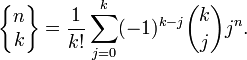
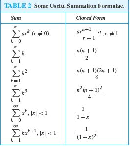
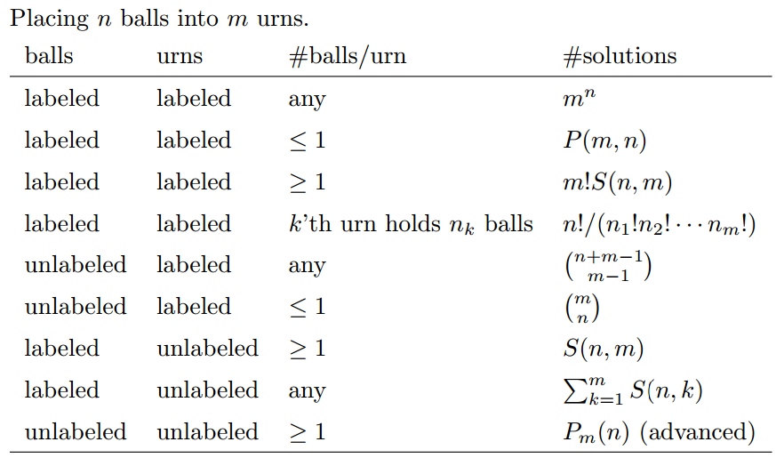
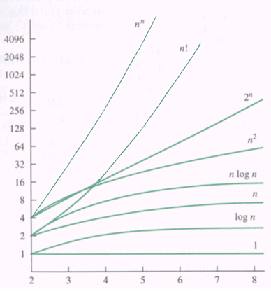

EECS 203 exam #2 study guide
Winter 2012, University of Michigan
by Evan Hahn + Scott Godbold + Brad Hekman + Alex Ihlenburg (add your names here if you helped!) + Ryan Yezman + Matt Schulte
This study guide is free-license in the public domain. Its accuracy is not guaranteed.
Feel free to edit if you think you have something to add, but please do not ruin this beautiful document.
Exam info
- Covers lectures 11 - 18, Stirling numbers, homework 6-8 (and first half of 9), Rosen 3.1 - 3.3, 6.1 - 6.5, and 7.1 - 7.4
- You can bring 2 single-sided sheets (aka one double-sided sheet)
- "In addition, in your solutions you are allowed to quote without proof any results proved in the lectures, discussion sections, homework, the sample exam, and the textbook."
Quick reference (blatantly copied and edited from this awesomeness)
- algorithm - a finite sequence for precise instructions for performing a computation or solving a problem
- searching algorithm - the problem of locating an element in a list
- linear search algorithm - a procedure for searching a list element by element. the linear search has O(n) wctc.
- binary search algorithm - a procedure for searching an ordered list by successively splitting the list in half. the binary search has O(log n) wctc
- sorting - the reordering of the elements of a list into prescribed order
- f(x) is O(g(x)) - the fact that |f(x)| <= C|g(x)| for all k > x for some constants C and k
- witness to the relationship f(x) is O(g(x)) - a pair C and k such that |f(x)| <= C|g(x)| for all k > x
- f(x) is big omega(g(x)) - the fact that |f(x)| >= C|g(x)| for all x > k for some positive constants C and k
- f(x) is big theta(g(x)) - the fact that f(x) is big O and big omega of g(x)
- time complexity - the amount of time required for an algorithm to solve a problem
- space complexity - the amount of space in a computer memory required for an algorithm to solve a problem
- worst-case time complexity (WCTC) - the greatest amount of time required for an algorithm to solve a problem of a given size
- average case time complexity - the average amount of time required for an algorithm to solve a problem of a given size
- algorithmic paradigm - a general approach for constructing algorithms based on a particular concept
- greedy algorithm - an algorithm that makes the best choice at each step according to some specified condition
- tractable problem - a problem for which there is a worst case polynomial time algorithm that solves it
- intractable problem - a problem for which no worst case polynomial time algorithm exists for solving it
- bubble sort - sorting algorithm that uses passes where successive items are interchanged if they are in the wrong order. bubble and insertion sort have O(n^2) wctc
- insertion sort - a sorting that at the jth step inserts the jth element into the correct position in the list, when the first j-1 elements of the list are already ordered. bubble and insertion sort have O(n^2) wctc
- combinatorics - the study of arrangements of objects
- enumerations - the counting of arrangements of objects
- permutation - an ordered arrangement of the elements of a set
- r-permutation - an ordered arrangement of r elements of a set
- P(n,r) - the number of r-permutations of a set with n elements
- r-combination - an unordered selection of r elements of a set
- C(n,r) - the number of r-combinations of a set with n elements
- binomial coefficient (n over r) - also the number of r-combinations of a set with n elements
- combinatorial proof - a proof that uses counting arguments rather than algebraic manipulation to prove a result
- pascal’s triangle - a representation of the binomial coefficients where the ith row of the triangle contains (I over j) for j = 0, 1, 2, …
- S(n,j) - the Stirling number of the second kind denoting the number of ways to distribute n distinguishable objects into j indistinguishable boxes so that no box is empty
- product rule for counting: the number of ways to do a procedure that consists of two tasks is the product of the number of ways to do the first tasks and the number of ways to do the second task
- product rule for sets - the number of elements in the Cartesian product of finite sets is the product of the number of elements in each set
- sum rule for counting - the number of ways to do a task in one of two ways is the sum of the number of ways to do these tasks if they cannot be done simultaneously
- sum rule for sets - the number of elements in the union of pairwise disjoint finite sets is the sum of the numbers of elements in these sets
- subtraction rule for counting or inclusion-exclusion for sets - if a task can be done in either n1 or n2 ways, then the number of ways to do the talk in n1+n2 minus the number of ways to do the talk that are common to the two different ways
- subtraction rule or inclusion exclusion for sets - the number of elements in the union of two sets is the sum of the number of elements in these sets minus the number of elements in their intersection
- division rule for counting - there are n/d ways to do a task if it can be done using a procedure that can be carried out in n ways, and for every way w, exactly n of the n ways correspond to way w
- division rule for sets - suppose that a finite set A is the union of n disjoint subsets with d elements. then n = |A|/d
- the pigeonhole principle - when more than k objects are placed in k boxes, there must be a box containing more than one object
- the generalized pigeonhole principle - when N objects are placed into k boxes, there must be a box containing at least ⌈N/k⌉ objects
- P(n,r)=n!/(n-r)!
- C(n,r)=(n over r)=n!/[r!(n-r)!]
- pascal’s identity - (n+1 o k)= (n o k-1)+(n o k)
- the binomial theorem - (x+y)^n = ∑_(k=0)^n (n o k)(x^(n-k))(y^k)
- there are n^r r-permutations of a set with n elements when repetition is allowed
- there are C(n+r-1, r) r-combinations of a set with n elements when repetition is allowed
- there are n!/(n1!n2!...nk!) permutations of an objects of k types where there are indistinguishable objects of type I for I = 1,2,3…k
- sample space - the set of possible outcomes of an experiment
- event: a subset of the sample space of an experiment
- probability of an event(Laplace’s definition): the number of successful outcomes of this event divided by the number of possible outcomes
- probability distribution: a function p from the set of all outcomes of a sample space S for which 0 <= p(xi) for I = 1,2…n and the sum from I=1 to n of p(xi)=1, where xi…xn are the possible outcomes
- probability of an event E - the sum of the probabilities of the outcomes in E
- conditional probability of E given F - p(E|F) - the ratio p(E intersect F)/p(F)
- independent events - events E and F such that p(E intersect F)=p(E)p(F)
- pairwise independent events - events E1, E2,…En such that p(Ei intersect Ej)=p(Ei)p(Ej) for all pairs of integers i and j with 1<=j<k<=n
- mutually independent events - events E1, E2,…En such that the probability of intersection of the events up to Em is the product of the probability of each individually where m<=n and m>=2
- random variable - a function that assigns a real number to each possible outcome of an expression
- distribution of a random variable X - the set of pairs(r, p(X=r)) for r ∈ X(s)
- uniform distribution - the assignment of equal probabilities to the elements of a finite set
- expected value of a random variable - the weighted average of a random variable, with values of the random variable weighted by the probability of outcomes, that is E(X)=∑_(s∈S)p(s)X(s)
- geometric distribution - the distribution of a random variable X such that p(X=k)-(1-p)^(k-1) for k = 1,2,… for some real number p with 0<=p<=1
- independent random variables - random variables X and Y such that p(X=r1 and Y=r2)=p(X=r1)p(Y=r2) for all real numbers r1 and r2
- variance of a random variable X - the weighted average of the square of the difference between the value of K and its expected value E(X), with weights given by the probability of outcomes, that is, V(X)=∑_(s∈S)(S(s)-E(X))^2p(s)
- standard deviation of a variable X - the square root of the variance of X, that is σ(X)=sqrt(V(X))
- Bernoulli trial - an experiment with two possible outcomes
- probabilistic(or Monte Carlo) algorithm - an algorithm in which random choices are made are one or more steps
- probabilistic method - a technique for proving the existence of objects in a set with certain properties that proceeds by assigning probabilities to objects and showing that the probability that an object has these probabilities is positive. the probability of exactly k successes when n independent Bernoulli trials are carried out equals C(n,k)p^(k)q^(n-k), where p is the probability of success and q=p-1 is the probability of failure
- bayes’ theorem - if E and F are events from a sample space S such that p(E) ≠ 0 and p(F) ≠ 0, then P(E|F) = P(F|E) * P(E) / P(F)
- linearity of expectations - E(x1+x2+…+xn)=E(X1)+ E(x2)+…+ E(xn), if x1, x2, …, xn are random variables
- if X and y are independent random variables, then E(XY)=E(X)E(Y)
- beinayme’s formula - if x1, x2, …, xn are independent random variables, then V(x1+x2+…+xn)= V(x1)+V(x2)+…+V(xn)
- chebyshev’s inequality - p(|X(s)-E(X)|>=r) <= V(X)/r^2 where X is a random variable with probability function p and r is a positive real number
Algorithms (lecture 11)
- Algorithm - finite sequence of precise instructions to perform a computation
Searches
- Linear search - start at the front, brute-force until you find it. Worst case: O(n)
- Binary search - start at the middle of a sorted list. If you’re too high, search the left half of the list. If you’re too low, search the right half of the list. Worst case: O(log(n))
Sorts
- Bubble sort - switch adjacent values over and over again until you don’t switch no more. Another way to think about bubble sort is: find the biggest element and put it at the end, then look for the second biggest element and put it one from the end and so on.
Worst case O(n2), best case O(n). - Insertion sort - place each element from the unsorted list to the correct place in the sorted list. Worst case O(n2), best case O(n).
Halting problem
- Procedure that cannot be solved with an algorithm.
- H(P, I) defines H as a procedure which takes in two arguments. P is a program and I is arguments to P. H returns true if P will halt with arguments I or false if P loops for ever
- Proof that H(P, I) cannot be solved with a procedure: Define K(P) as halting if H(P,P) ( a program can take itself as an argument) returns false (run for ever). K(P) runs for ever if H(P,P) returns true (halting).
- If we pass K itself K(K). If K halts then H(K,K) would’ve said the K would run for ever and also if K runs forever H(K,K) would’ve said that K halts. Thus creating a contradiction
Costs of a computation (lecture 12)
Big O, Big Omega, Big Theta
- Big O: upper bound on the growth of the function
- f(x) = O(g(x)) therefore C*g(x) ≥ f(x)
- Big Omega: lower bound on the growth of a function
- f(x) = Ω(g(x)) therefore C*g(x) ≤ f(x)
- Big Theta: a function that describes the same growth order as function you are observing
- f(x) = ϴ(g(x)) therefore C1*f(x) = O(g(x)) & C2*f(x) = Ω(g(x))
- Only matters as the function progresses to infinity, you are allowed to say for all x > k
- When disproving all big O or big Ω, show no such k or C values exist
- Algebra relations
- Addition
- f(x) is O(g(x)) & e(x) is O(h(x)) then (f + e) is O(max( g(x), h(x) ))
- Scalar multiplication
- When f(x) is O(g(x)) and there is a constant k then k*f(x) is O(g(x))
- Product
- f(x) is O(g(x)) & e(x) is O(h(x)) then (f*e) is O( g*h )
- To determine a function's big O you must find the sum equivalent value and determining what binds it
- If the limit exists and is finite as x goes to infinity of f(x)/g(x) then f(x) ∈ O(g(x))
- if the limit is infinite, then f(x) ∉ O(g(x))
Tractability
- A problem is considered tractable if the algorithm to solve the problem has polynomial or less complexity
- A problem is considered intractable if the algorithm to solve the problem had exponential or higher complexity
- A problem is considered unsolvable if no algorithm solves the problem. (ie: The Halting Problem)
Counting (lecture 13)
Inclusion-Exclusion
- |A ∪ B| = |A| + |B| - |A ∩ B|
- |A ∪ B ∪ C| = |A| + |B| + |C| - |A ∩ B| - |A ∩ C| - |B ∩ C| + |A ∩ B ∩ C|
Cartesian Product
- S = S1 x S2 x ... x Sn
- |S| = |S1| |S2| ... |Sn| (whether disjoint or non-disjoint)
- // Composite: not prime
Pigeonhole principle
- If N pigeons nest in k < N holes, then at least one hole will have two or more pigeons.
- Generalized Pigeonhole Principle
- If N objects are placed into k boxes, then there is at least one box containing at least CEIL(N / k) objects.
- Purified Pigeonhole Principle (EWD)
- For a nonempty, finite bag of numbers, [bag allows repetitions] the maximum value is at lea
- st the average value.
Binomial Theorem (lecture 14 & 15)
- Definition
- n ≥ 0, (x + y)n =
- Similar to the multinomial theorem, which expands it out to an arbitrary m elements
Combinations & Permutations
Combinations/Choose (aka binomial coefficient): order doesn’t matter
- C(n, k)
- The number of ways to choose k objects from n objects if order doesn't matter
- For example, you want to pick a team of 5 from 20 people -- order doesn't matter, so it's C(20, 5)
- C(n, k) = (and you can see it prettier on Wikipedia)
Permutations: order matters
- P(n, k)
- The number of ways to choose (pick) k objects from n objects if order matters
- For example, if you want to pick the top 10 songs from 200, order matters, so it's P(200, 10)
- P(n, k) = n! / (n - k)! (and you can see it prettier on Wikipedia)
Stirling numbers of the second kind
- S(n, k) = the amount of ways to split n distinguishable objects into k indistinguishable bins
- For example, if you have 4 employees and want to put them into 2 offices (and you can't distinguish the offices), that's S(4, 2) = 7 different ways to do this
- There's an ugly formula which you might wanna write down
 - It's usually best to use a chart, which you might also want to write down
Probability
- Starts with a defined sample space S and an event E in that sample space
- probability of E is P(E) = |E| / |S|
- 0 ≤ P(E) ≤ 1
- P(not E) = 1 - P(E)
- P(E1 ∪ E2) = P(E1) + P(E2) - P(E1 ∩ E2)
- Method for probability
- Find the sample space
- Define events of interest
- Determine outcome probabilities
- Compute event probabilities
Bayes' Theorem
- P(E|F) = the probability of E, given F
- G is the complement of E
- More generally,
 . P(F) may be given or easier to determine.
. P(F) may be given or easier to determine. - If you have P(F) = ½, then the you can use a simpler version: P(E|F) = P(F|E) / [ P(F|E) + P(F|E complement)]
Expectation and variance
- Expected value = E(x)
- (X(s) is a random variable)
- E(x) = Σ P(si)X(si)
- Expectations are linear, whether or not Xi are independent
- Useful in proving basic propositions
- E(X_1 + X_2) = E(X_1) + E(X_2)
- E(aX + b) = aE(X) + b
- Total Expectations
- E(R) = ΣE(R|Ai)X(Ai)
- Deviation is X(s) - E(x) however this is not very useful and is often squared
- Variance
- V(x) = Σ_s∈S (X(s) - E(x))2 p(s)
- Standard deviation = √V(x)
Example problems
Q: Monty Hall problem: 3 doors, one with a car and two with goats. You choose one without opening it and Monty shows you behind a different door, one that has a goat. Should you change your door?
A: Yes. Why? When you choose first, your chances are ⅓, and so your chances of being wrong are ⅔. But when Monty eliminates a door the chance that the door you picked is still ⅓, and so 1 - ⅓= ⅔ is distributed across the remaining doors, in this case 1 door. So ⅔ is the probability that the remaining door has the prize.
Q: Hat check problem: You check your hat in, but the hat man forgot to put numbers on the hats. What is the expected number of people that get their own hat back?
A: 1. Why? Expectations are linear. X = X1 + X2 + X3 + X4 + X5.... + Xn. E(Xi) = 1/n. You can add up the chances of each person getting their hat back to ge the expected number. Summation of (1/n) from i = 1 to n, which is 1. [For example 3 people... 1/3 + 1/3 + 1/3 = 1]
Q: If you throw 2 dice, what is the expected number of throws before you get snake eyes.
A: 36. Why? The total number of ways 2 die can land is 36, and snake eyes only appears in 1 of those 36. So 1/p = 36, p = 1/36
Q: The SAT has a mean of 500 and standard deviation of 100, what does Chebyshevs tell us about getting a score greater than 700?
A: 1/8. Why? P(SAT) >= 700 = ½P(SAT >= 700 or <= 300) = ½ V(X)/r^2 = ½ * (100^2)/(200^2) = 1/8 The ½ is because we want just scores > 700 not less than 300. 100 = the standard deviation and the 200 comes from X(s) - E(X) which here is 700 - 500.
Q: a) What is the probability that two people chosen at random were born during the same month of the year? b) What is the probability that in a group of n people chosen at random that there are at least two born in the same month of the year? c) How many people chosen at random are needed to make the probability greater than 1/2 that there are two people born in the same year.
A: a) 1/12. There are 12 months in the year, and being born is an independent event. That is, the probability that you were born in a certain month doesn’t depend on the probability that another individual was born in that same month. Since there is only one way for two people to be born on the same month the probability is 1/12.
b) Same as birthday problem.
c) 5. ???
Q: a) Prove that S(n,n-1) = C(n,2) for n >= 2 b) Prove that S(n,2) = 2n-1 - 1, n >= 2
A: a) By the Pigeonhole Principle, a placement must have 2 balls in the same urn, while by the requirement that no urn is empty, each of the other urns contains precisely 1 ball. Thus a 2placement uniquely determine a pair of balls. Conversely a pair of balls uniquely determine a placement in which the two balls in the pair are in the same urn and others in their other urn. Thus there are C(n,2) placements.
b) Each non-empty proper subset A subset of n uniquely determines a placement with A in one urn and B = not A in the other urn. For each placement precisely 2 proper subsets A and not A would give the same placement (by setting A to be the set of balls of either urn). Thus the number of placements is (2n- 2)/2 = 2n-1 - 1
Q: a) Suppose we have a training set of 10,000 spam messages and 5000 non spam messages. The word enhancement appears in 1500 spam messages and 20 non spam messages. Starting with a the uniform prior what is the posterior probability that a message is spam given that it contains the word “enhancement”.
A: a) p( enhancement | Spam ) = 1500/10000 = .15, p(enhancement | not Spam) = 20/5000 = .004, p(Spam | enhancement) = (.15*.4)/(.15*.5 + .004*.5) = .150/.154 = .974 or 97.4%
Know how to do a Bayes’ theorem problem involving spam filters (1, 2, or 3 filter words).
More examples can be found on the homework problems, which might be worth copying onto your formulas sheet.
Ideas for things to copy down
- Summation formulas in chapter 2
 - Best/worst cases for algorithms
- Formulas
- Table of Stirling numbers of the second kind
- Homework problems
- Placing n balls into m urns formulas from review
- Typed up vocab

This is awesome, thank you!
how many other people think this exam is gunna suck?
Suck | Not Suck| Double Suck Sundae
10 | 0 | 1